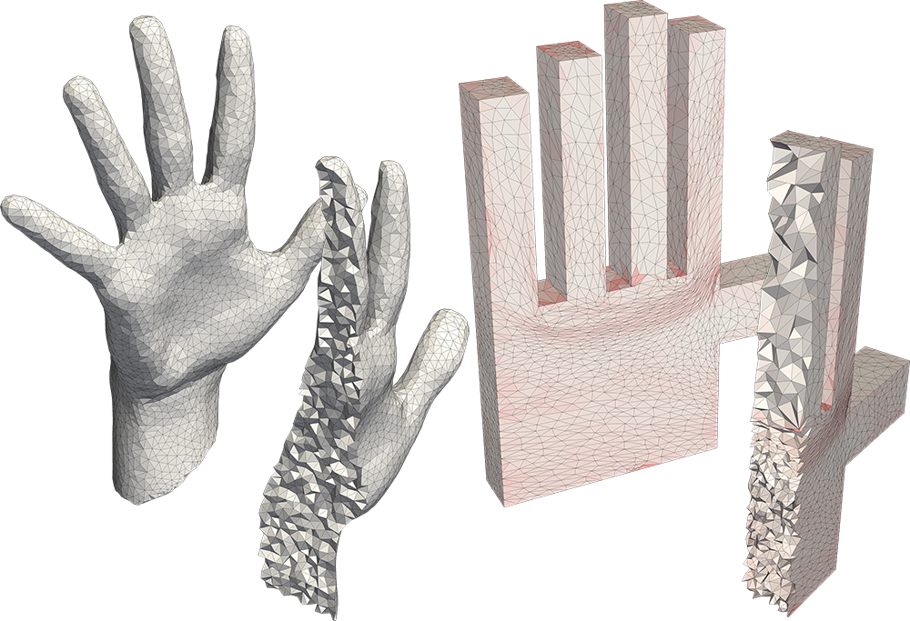
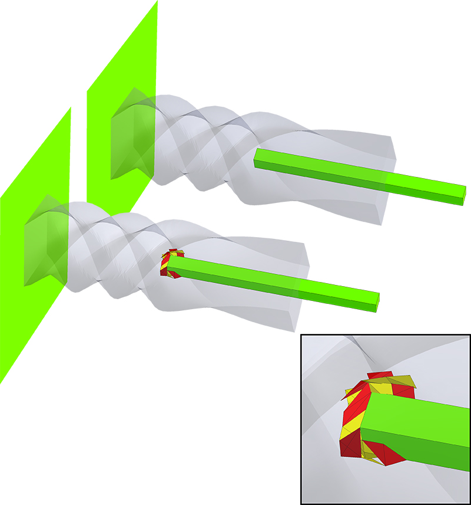
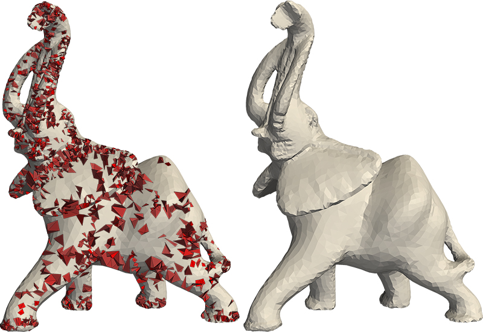
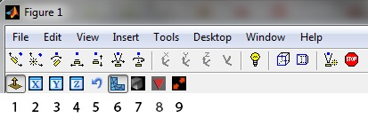

Injective and Bounded Distortion Mappings in 3D: Project Page
| Noam Aigerman | Yaron Lipman |
| SIGGRAPH 2013 | |

A globally bijective, bounded-distortion mapping of a volumetric mesh to a polycube.
A globally bijective, bounded-distortion mapping of a volumetric mesh to a polycube.

Approximating a deformation with a bounded-distortion map.
Approximating a deformation with a bounded-distortion map.

Improving the maximal aspect-ratio distortion of a tetrahedral mesh.
Improving the maximal aspect-ratio distortion of a tetrahedral mesh.
Abstract
We introduce an efficient algorithm for producing provably injective mappings of tetrahedral meshes with strict bounds on their tetrahedra aspect-ratio distortion. The algorithm takes as input a simplicial map (e.g., produced by some common deformation or volumetric parameterization technique) and projects it on the space of injective and bounded distortion simplicial maps. Namely, finds a similar map that is both bijective and bounded-distortion. As far as we are aware, this is the first algorithm to produce injective or bounded-distortion simplicial maps of tetrahedral meshes. The construction of the algorithm was made possible due to a novel closed-form solution to the problem of finding the closest orientation-preserving bounded-distortion matrix to an arbitrary matrix in three (and higher) dimensions. The algorithm is shown to have quadratic convergence, usually not requiring more than a handful of iterations to converge. Furthermore, it is readily generalized to simplicial maps of any dimension, including mixed dimensions. Finally, it can deal with different distortion spaces, such as bounded isometric distortion. During experiments we found the algorithm useful for producing bijective and bounded-distortion volume parameterizations and deformations of tetrahedral meshes, and improving tetrahedral meshes , increasing the tetrahedra quality produced by state-of-the-art techniques.Paper
Code
Download
Download the matlab code here. For questions, requests or feedback, email .Usage
The usage is rather simple (See also the attached README). The main function project_on_bd accepts the list of tetrahedras tri, the source positions X_source and the target positions X_target (defining the initial simplicial map), the required distortion bound K, and possibly more optional arugments, such as positional constraints. The function returns (if converges) the positions X_new, such that the bounded-distortion map maps X_source to X_new. An example is given in script_example_projection.m (see elaboration on the input arguments for project_on_bd in the data section, and also the in the function's documentation):
%load data
load('elephant_stand_5.mat');
%run the projection
X=project_on_bd(X_source,X_target,tri,K,constraint_matrix,constraint_rhs);
Mesh Improver
We also include a mesh-optimizer, as described in Section 5.3 in the paper. Its usage is also straightforward; To use it, call the function improve_mesh, with the list of tetrahedra T and the initial positions of the vertices, X, the aspect-ratio K, and the optional argument constrain_boundary, which if given and equal to 1, means the boundary of the mesh is constrained in place. An exmaple is given in script_example_improve.m:% load a mesh. We will only use X_source (the original vertices'
% location) and tri.
load('elephant_stand_5.mat');
%improve the mesh's tets to have maximal aspect-ratio distortion of 5
newX=improve_mesh(X_source,tri,5);
Viewer
Lastly, as simply vieweing the boundary of a voluemtric mesh is not enough to fully understand how the interior is mapped, we also supply a simple volumetric viewer. To use it call the function cross_section_app with the OPTIONS struct returned from the projection\improvement functions, as so:%load data
load('elephant_stand_5.mat');
%run the projection, get also the OPTIONS output var
[X,OPTIONS]=project_on_bd(X_source,X_target,tri,K,constraint_matrix,constraint_rhs);
%open the viewer
cross_section_app(OPTIONS); A plane cuts the mesh and displays its interior, coloring tets according to the color scheme in the paper (redness=amount of distortion, yellow tet=inverted). Drag the mouse while holding the right key to sweep through the mesh to cut it at different positions; Drag while holding the left key to change the orientation of the cutting-plane. The main options of the viewer are described in the following image:

Aside from 7 & 8, most options are unnecessary if one wishes to simply inspect the mappping, and most of them are intuitive - just try and play with them. They are:
1. Enable control over the display type (must be toggled to control all over parameters).
2+3+4. Clamp the normal of the cutting plane to one of the main axis.
5. Invert the normal of the cutting plane.
6. Apply the cut according to the source mesh's vertices' positions or the target mesh's.
7. Display the initial mapping or the final (projected) mapping (default=the projected map).
8. Display only "bad" tets, i.e. inverted or above the assigned distortion bound.
9. Swap between the source mesh and the target mesh, in case you want to see how the source mesh looks like.
E.g., to view all the "bad" tets in the initial mapping, toggle both 8 and 7.
Datasets
Download
Download datasets used in the paper here.Data Contents
Each .mat file contains data for a specific mesh & map. The variables stored in the .mat file are:| Variable name | Description | Dimensions |
|---|---|---|
| X_source | The mesh's vertex positions. The i'th row contains the 3 coordinates of the i'th vertex. | n×3 |
| X_target | The initial mapping of the vertex positions (the initial map). | n×3 |
| tri | The tetrahedra. The i'th row contains the 4 indices of the vertices of the i'th tetrahedron. | m×4 |
| K | The distortion bound used in our algorithm. | scalar |
| constraint_matrix | The matrix of positional constraints. | r×3n (The number of rows r determined by number of constraints) |
| constraint_rhs | The rhs of the positional constraints. | r×1 |
| X_projected | The final mapping of the vertex positions (the projected map). | n×3 |
See the code section on how to run the loaded data.
Included Experiments
The data is divided to folders according to the type of the experiment:| Folder name | Description | Section in paper |
|---|---|---|
| deformations | Bounded-distortion projections of deformations of mehses. | 5.1 |
| polycubes | Bounded-distortion mappings of voloumetric meshes to polycube structures. | 5.2 |
| improvement | Mesh-improvement of various meshes. To be used with the mesh-improver (see the code section). | 5.3 |
| isometry | A variation of a our algorithm: projection of a deformation on the bounded isometric distortion space. | 5.4 (2nd paragraph) |
| 2D | Examples of our algorithm applied in 2D, to LSCM and ARAP mappings. | 5.5 (last paragraph) |
BibTex
@article{Aigerman:bd3d:2013,
author = {Noam Aigerman and Yaron Lipman},
title = {Injective and Bounded Distortion Mappings in 3D},
journal = {ACM Transactions on Graphics (proceedings of ACM SIGGRAPH)},
volume = {32},
number = {4},
year = {2013},
pages = {106:1--106:14},
}